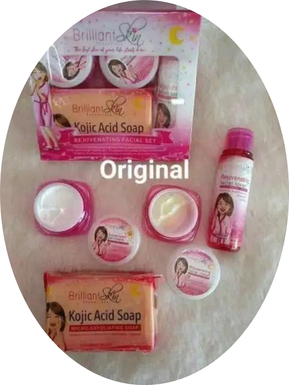

After cleansing with Brilliant Skin kojic Acid Soap, place a small amount of Brilliant Skin Rejuvenating Facial Toner on a cotton pad and spread evenly on the face and neck in an upward motion. Use twice daily for one month then rest for another month before using it again.
Follow the right order. Here's the classic plan: Cleanse, tone (this step is optional), facial treatment/serum, moisturizer, sunscreen, and then any makeup. The general rule is to apply products from thinnest to thickest.